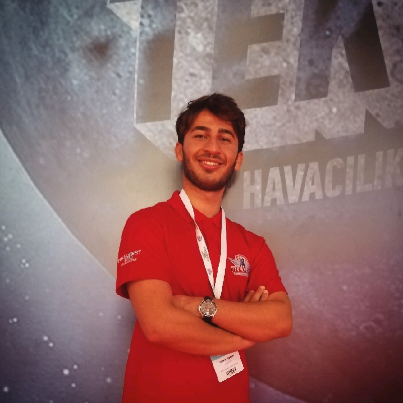
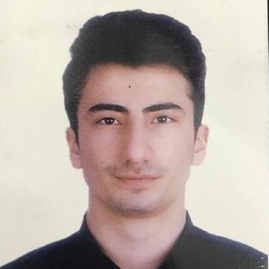

-

Mehmet Öztürk
Mehmet Öztürk, Marmara Üniversitesi bilgisayar mühendisliği 2. sınıf öğrencisidir. Teknofest 2020 Akıllı Ulaşım Kategorisi Jüri Ödülünü kazanmıştır.Projeler
- A-Peron
- Misus
- E-Ticaret Sitesi
- Blog Sitesi
- DevMaids
- Deprem Sensör Cihazı
- Mücevherat Tanıtım Sitesi
İletişim: mehmet.ztrk2134@gmail.com
-
Nur Hatipoğlu
Nur Hatipoğlu, Marmara Üniversitesi Bilgisayar Mühendisliği 2. sınıf öğrencisidir. Derin öğrenme ve nesne yönelimli programlama alanında çalışmalar yapmaktadır.Projeler
- Duygu Analizi Sonucunda Kullanıcıya Mesaj Veren Sistem(Python Masaüstü Uygulaması)
- Eczane Yönetim Sistemi (Java Masaüstü Uygulaması)
- Otel Yönetim Sistemi (Java Masaüstü Uygulaması)
- Animasyonlu Top Oyunu (Java Masaüstü Uygulaması)
- Bisiklet Fiyat Tahmini (Python Veri Analizi)
İletişim: 0.anurzz.9@gmail.com

-

Murat Acar
Murat Acar, Marmara Üniversitesi Bilgisayar Mühendisliği 3. sınıf öğrencisidir.Projeler
- Şirketler için inovasyon portalı(WEB uygulaması)
- Makale Yönetim Sistemi(WEB uygulaması)
- Ekran görüntüsünden translate işlemi (Python Masaüstü Uygulaması)
- Göz hareketleri ile bilgisayar kontrolü (Python Masaüstü Uygulaması)
- 2. El araç satışı takibi programı (Python web crawling Uygulaması)
- İşci Maaş bodrosu (Java Masaüstü Uygulaması)
İletişim: mrtacr2534@gmail.com